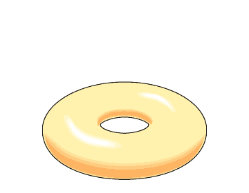
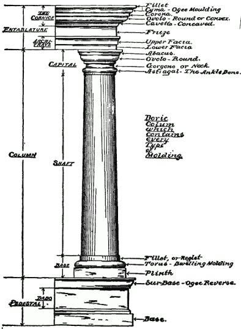

tiltorus
One of my favorite mathematical shapes is the torus. Not only does it remind me of a doughnut (mmm), but it’s the first step into topology with the introduction of a hole. Not only is a doughnut topologically a torus, but so is your accompanying coffee mug1!

But where does this word “torus” come from? It happens to be the Latin word for… a pillow. The classic round poof with a pin through the middle to keep it flat2.

Later used to describe architectural decoration that reminded them of that shape, in particular the rounded molding at the base of some Doric columns.

I find it fascinating how words we consider academic and sterile have roots in everyday things. “That column base looks like a fluffy pillow, let’s call it so” led to a defined term as mathematics provided architectural rigor.